HR_HR ／ CRM（/app/crm）
CRM 画面 操作マニュアル
BPO のアポインター（取引）と、応募者に電話する一次対応の担当（応募）が使う画面の操作をまとめた資料。HubSpot の取引・応募をこの画面で開き、電話をかけ、結果を HubSpot に保存する。
- 画面写真はすべて架空のサンプル（
?mode=fixture）で撮影した。会社名・氏名・番号は実在しない。右の枠の検索結果はぼかしてある。 - 実際の画面では、項目名とステージ名は HubSpot の設定どおりに出る。サンプルとは項目の数が違う所がある（例: 移す画面の必須項目）。
- 2026-11-12 時点の画面に基づく。
取引（BPO アポインター）
- 開き方と前提
- 画面の見方
- 1 件の流れ
- 取引一覧
- 条件を変える・ビュー
- 電話をかける
- 架電結果の入力
- ステージを移す（必須項目）
- 保存の状態と競合
- プロパティを見る・直す
- 活動ログ
- メール
- 右の枠（求人検索など）
- 今日の成績
- 配置を変える
応募（一次対応）・共通
開き方と前提START
- ブラウザ（Chrome）で
https://hr-hw.onrender.com/app/crmを開く。会社の Google アカウント（f-a-c.co.jp）でログインする。 - ここで見ている取引・担当者・会社・活動は HubSpot のデータ。ここで保存した内容は HubSpot に書き込まれ、HubSpot の画面でも同じ値になる。
- 電話は Zoom Phone を使う。Zoom アプリを起動してサインインしておく（電話をかける）。
- メールを送る場合は、最初に一度だけ Gmail の許可が要る（メール）。
- 画面上部の 取引 応募 で、取引（架電）と応募（一次対応）を切り替える。
画面の見方LAYOUT
左に一覧、中央に選んだ取引、右に検索結果やホームページを出す 3 列の画面。
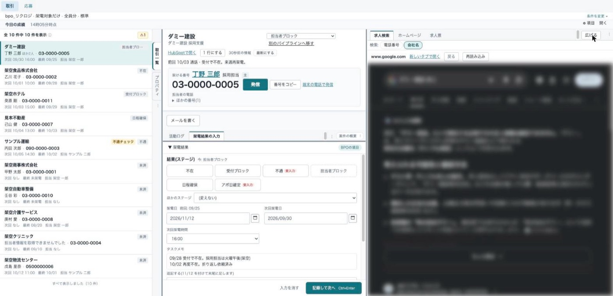
1 2 3 4 5 6 7 8 9 10 11| 場所 | できること | |
|---|---|---|
| 1 | 取引／応募 | 取引（架電）と応募（一次対応）の切り替え。 |
| 2 | 条件の帯 | いまの条件が 1 行で出る。条件を変更 ▾ で絞り込み・並びを変える。 |
| 3 | 今日の成績 | 自分の今日の架電数・通話時間・アポ。開く で数字を出す。 |
| 4 | 取引一覧 | 電話をかける取引の一覧。押すと中央に開く。 |
| 5 | 縦のタブ | 左の列を「取引一覧」と「プロパティ」で切り替える。 |
| 6 | 案件の概要 | 会社名・案件名、ステージ、HubSpotで開く、前回の通話。 |
| 7 | 架ける番号 | 電話番号と 発信 番号をコピー。 |
| 8 | タブ | 「活動ログ」と「架電結果の入力」を切り替える。 |
| 9 | 架電結果の入力 | 結果のステージ、次回架電日、タスクメモを入れる。 |
| 10 | 記録して次へ | HubSpot に保存して、一覧の次の取引へ進む。 |
| 11 | 右の枠 | 求人検索・ホームページ・求人票。広げる で画面いっぱいにする。 |
画面の高さが低い（800px 以下）ときは、案件の概要が自動で 1 行表示になる。詳しく表示 と 1 行にする で切り替えられる。
1 件の流れFLOW
図2 1 件あたりの操作の順番。
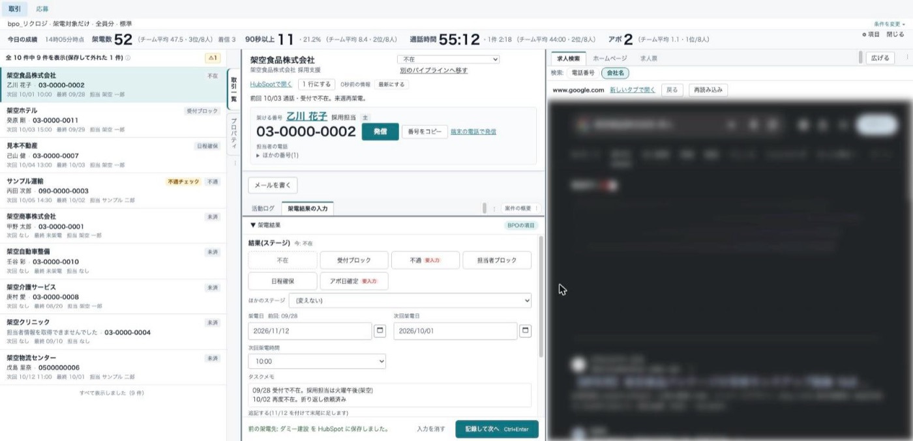
取引一覧LIST
行の見方
- 1 行目: 会社名（無ければ案件名）と、右に印とステージ名。
- 2 行目: 担当者名と電話番号。担当者が複数いると「ほか N 人」が付く。
- 3 行目: 「次回 月/日 時刻」「最終 月/日」（未架電なら「未架電」）「担当 ○○」。
- 条件や並びに使った項目があると、その値が 1 行追加で出る（最大 4 つ）。
行に出る印
| 印 | 意味 |
|---|---|
| ✓記録済 | この画面から HubSpot に保存した。印はこのタブだけに残る。 |
| ⚠記録済 | HubSpot には保存した。ただし印を残せないため、閉じたり再読み込みしたりすると消える。 |
| 条件から外れました | 保存した内容で、いまの条件に合わなくなった。別の行を選ぶと一覧から消える。 |
| 架電禁止／ブロック | 理由が入っている。マウスを載せると理由が出る。発信はできない。 |
| 不通チェック | 不通時チェックが付いている。マウスを載せると中身が出る。 |
件数と「⚠」
- 見出しの「全 N 件中 M 件を表示」は、条件に合う件数と表示している件数。電話番号が無い取引と、架電禁止・ブロック理由のある取引は一覧に出さないため、表示できる数は少なくなる。
- ⚠N は、一部の情報が欠けていることを示す。押すと内訳が出る（担当者情報を取れなかった行、電話番号が無いため除いた件数など）。
- 下までスクロールすると続きを自動で読み込む。最後まで読むと「すべて表示しました（N 件）」が出る。
- HubSpot の検索は 1 万件までのため、それより先は出ない。条件を絞る。
条件を変える・ビューFILTER
条件の帯の右の 条件を変更 ▾ を押すと、操作欄が開く。帯にマウスを少し載せても開く。Esc で閉じる。
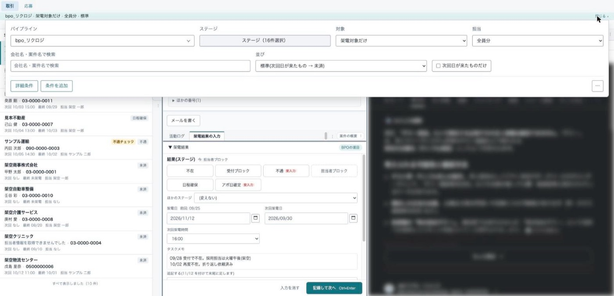
| 欄 | 使い方 |
|---|---|
| パイプライン | 1 つ以上選んで パイプラインを適用。変えるとステージの選択は「すべて」に戻る。 |
| ステージ | 表示するステージを選ぶ。すべて選択 すべて外す のあと 適用。 |
| 対象 | 「架電対象だけ」（既定）か「すべての取引」。すべての取引では、架電禁止・ブロックの取引も印付きで出る（発信はできない）。 |
| 担当 | 「全員分」「担当者なし」「自分」「一覧から選ぶ」。管理者以外の人は「自分」が既定。 |
| 会社名・案件名で検索 | 入力して Enter。 |
| 並び | 「標準(次回日が来たもの → 未済)」が既定。次回架電日・最終架電日の順も選べる。「ほかの項目で並べ替え…」で任意の項目の昇順・降順にできる。 |
| 次回日が来たものだけ | 次回架電日が今日以前の取引だけにする。 |
適用中の条件は帯の下にチップで出る。チップの「×」で 1 つずつ外せる。条件をクリア はパイプラインだけ残して元に戻す。
詳細条件（AND と OR）
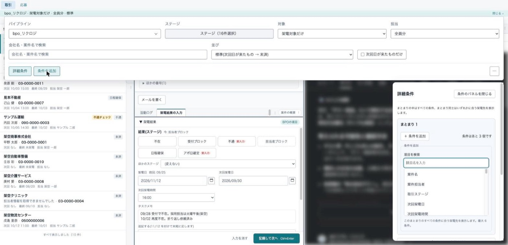
- まとまりの中の条件は「すべてに合う」（AND）、まとまり同士は「いずれかに合う」（OR）。HubSpot の絞り込みと同じ考え方。
- ＋ 条件を追加 で項目を選び、比べ方（いずれかに一致・を含む・以上・範囲・今日より前・過去 N 日以内・空 など）と値を入れて この条件を追加。
- ＋ 「または」の条件を追加 でまとまりを増やす。まとまりは 3 つまで、1 つのまとまりは 6 条件まで。「条件はあと N 個です」が残りの数。
- パネルの下に「次回架電日」「最終架電日」の から・まで もある。
ビュー（条件の保存）
- 詳細条件のパネルの下に「ビュー」がある。いまの条件に名前を付けて ＋ ビューを保存。
- 共有範囲は「自分だけ」か「全員に共有」。自分用は 50 件、共有は 100 件まで。
- ビューを開いて条件を変えると「変更あり」が出る。上書き保存 別名で保存 元に戻す を選ぶ。
- 共有のビューを直せるのは、作った人と管理者。
- 「すべて」を選ぶと条件なしに戻る。
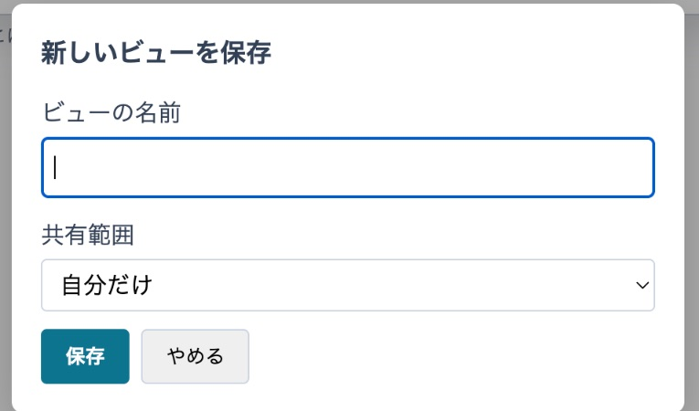
電話をかけるCALL
- 発信: Zoom Phone で発信する。消音・保留・通話を切る・数字の入力は Zoom の枠で行う（案件の概要の Zoomを開く）。
- 番号をコピー: 番号をコピーする。Zoom が使えないときに使う。
- 端末の電話で発信: パソコン・スマートフォンの電話アプリで発信する。
- 「ほかの番号(N)」を開くと、担当者の電話・携帯、会社の電話が並ぶ。
- 通話中は案件の概要に「呼び出し中」「通話中」と経過時間が出る。終わると「通話が終了しました（通話時間 M:SS）」などが出て、架電結果の入力が開く。
発信できないとき
| 表示 | すること |
|---|---|
| 架電禁止のため発信できません／ブロックのため発信できません | かけない。理由は一覧の印に出ている。 |
| Zoom にログインしてください。ログインできたら、もう一度発信を押してください | Zoom の枠でサインインしてから、もう一度 発信。 |
| Zoom Phone を準備しています。少しお待ちください | 数秒待ってから 発信。 |
| Zoomが応答しません。Zoomアプリを起動してサインインしてから、もう一度発信してください | Zoom アプリを起動・サインインする。枠に「No available device」が出ていれば、サインイン後に画面を再読み込みする。その間は 番号をコピー か 端末の電話で発信 を使う。 |
| ダイヤルできる形式ではないため発信できません | HubSpot の番号を確かめる。 |
| 通話中のため、新しい発信はできません。 | いまの通話を Zoom の枠で切ってから発信する。 |
架電結果の入力RESULT
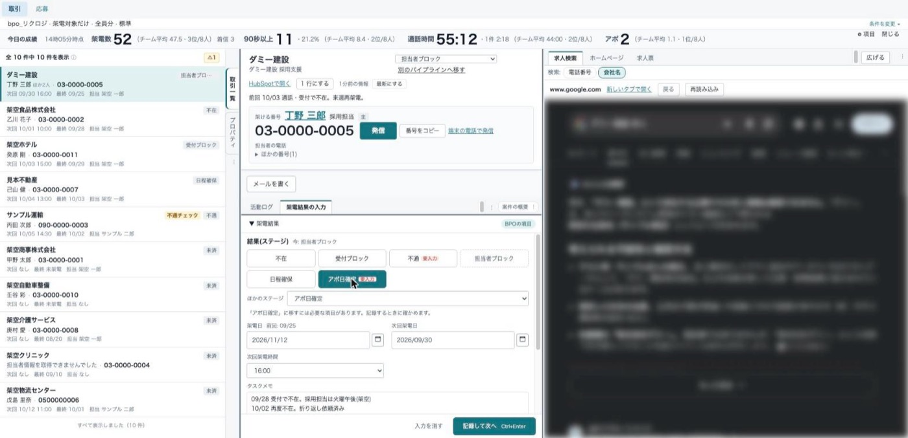
- 結果（ステージ）を選ぶ
よく使うステージはボタン（不在・受付ブロック・不通・担当者ブロック・日程確保・アポ日確定 など）。無いものは「ほかのステージ」から選ぶ。今のステージのボタンは押せない。ステージを変えないなら選ばなくてよい。 - 架電日・次回架電日・次回架電時間
架電日には今日が最初から入っている。横に「前回: 月/日」が出る。 - タスクメモ
上に今の内容が出る。下の「追記する」に書くと、今の内容の末尾に「月/日」を付けて足される。全文を直すときは左の「プロパティ」で編集する。 - 記録して次へ
入力欄の中で Ctrl+Enter（Mac は ⌘+Enter）でも押せる。Enter だけでは保存されない。保存できると一覧の次の未記録の取引が開く。変更が無ければ保存せずに進む。
- 入力を消す: 押すと「入力した内容を消します(HubSpot の値は変わりません)。」と出る。消す で入力だけ消える。
- 入力途中の内容は、このタブを閉じない限り再読み込みしても残る。
- 保存できなかった（赤）ときは次へ進まない。表示に従って直してから、もう一度押す（保存の状態と競合）。
ステージを移す（必須項目）STAGE
HubSpot では、ステージによって移すときに入力する項目（必須・任意）が決まっている。この画面でも同じ項目・同じ順番で入力する。
移し方は 3 通り
| 入口 | どこ |
|---|---|
| 結果のボタン | 架電結果の入力でステージを選び、記録して次へ。必須項目があれば移す画面が先に開く。 |
| 見出しのステージ | 案件の概要のステージのプルダウンで選ぶ。 |
| 別のパイプラインへ移す | 案件の概要の 別のパイプラインへ移す。パイプラインとステージを選んで 次へ。移し先のステージの項目が出る。 |
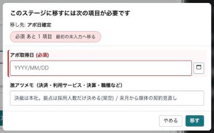
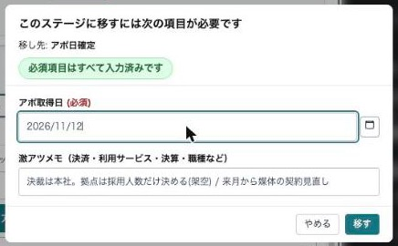
- 項目は HubSpot の設定の順に 1 列で並ぶ。必須には「(必須)」が付く。値がすでに入っている項目は、その値が入った状態で出る。
- 「必須 あと N 項目 最初の未入力へ移る」を押すと、最初の未入力の欄へ移る。
- 未入力のまま 移す を押しても保存されず、最初の未入力の欄へ移る。
- すべて入れて 移す を押すと、ステージと入力した項目がまとめて保存される。結果のボタンから開いた場合は、架電日・次回架電日・メモも同じ保存に入る。
- やめる で何も保存せずに閉じる。ステージは元のまま。
「アポ獲得者」「アポ取得者」が空のときは、操作している本人が最初から入っている。別の人なら選び直す。FS 担当者・IS 担当者などには何も入れない。
- 「案件差戻」に移す画面には、HubSpot と同じく任意の「取引担当者」が出る。取引担当者はこの画面以外では変えられない。
- 必要な項目の数はステージで違う。例: bpo_リクロジの「アポ日確定」は必須 22 項目、リクロジ受注管理_商談の「Aヨミ：90％」は必須 45 項目。
- 画面に出せない必須項目があると「HubSpot 側で必須の項目のうち、この画面で入力できないものがあります(○○)」と出る。管理者に伝える。
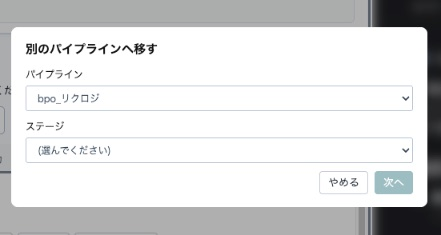
保存の状態と競合SAVE
保存した項目の横や、画面の下に状態が出る。
| 色 | 表示 | 意味とすること |
|---|---|---|
| 保存中… | 送信中。待つ。 | |
| 緑 | ✓ 保存済み | HubSpot に保存できた。 |
| 黄 | 反映待ち(HubSpot に一時保存しました。つながり次第、自動で反映します) | HubSpot が混んでいる・つながらないため、一時保存した。自動で送り直すので、入れ直さない。 |
| 黄 | まだ反映待ちです(…しばらくしても反映されないときは管理者に伝えてください) | 30 分たっても反映されていない。管理者に伝える。 |
| 赤 | 入力を確認してください: ○○ | 入力の誤り・必須の不足。直して保存し直す。何も保存されていない。 |
| 赤 | 保存できていません: ○○ | 保存できていない。もう一度保存 が出ていれば押す。 |
HubSpot 側で先に変更されていたとき
見ていた間に、HubSpot（ほかの人・自動処理）で同じ項目が変わっていると、上書きせずに止まる。「HubSpot 側で先に変更されています」の画面に「項目／HubSpot の今の値／あなたの値」が並ぶ。
- HubSpotの値を使う: 自分の入力を捨て、HubSpot の値のままにする。
- 自分の値で上書き: 自分の値で保存し直す。
プロパティを見る・直すPROPERTIES
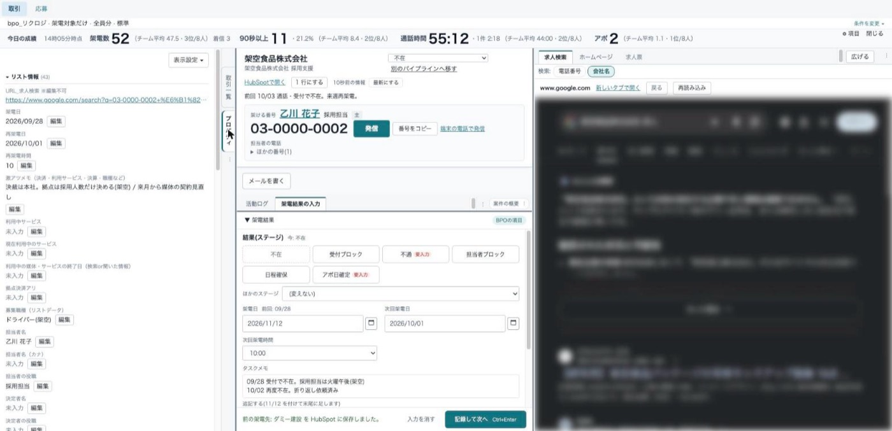
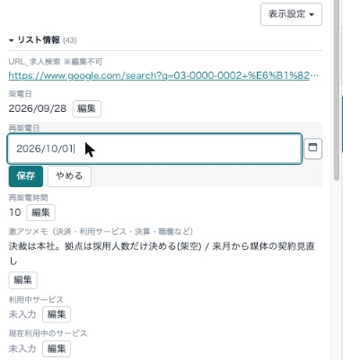
- 各項目の 編集 か、行のダブルクリックで直す。Enter で保存（複数行の欄は Ctrl+Enter）、Esc でやめる。
- 「※編集不可」の項目や、HubSpot が自動で入れる項目は直せない。
- 表示設定 ▾ →「表示する項目を選ぶ」で、出す項目と順番を変えられる（最大 100 項目）。HubSpot のカードからまとめて選ぶこともできる。既定に戻す で元に戻る。
- 「役割の標準に戻す」は、管理者が役割ごとに決めた並びに戻す。
活動ログACTIVITY
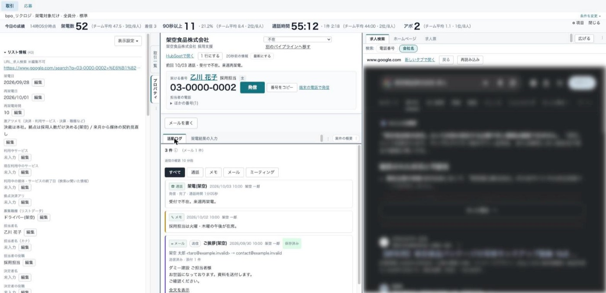
- 上の すべて 通話 メモ メール ミーティング で種類を絞る。
- 通話には状態（完了・応答なし・話し中 など）と通話時間が出る。録音があれば「録音を聞く」。
- 担当者経由の通話には「担当者の通話(別の案件のものを含む場合があります)」が付く。同じ担当者の別の取引の通話が混ざることがある。
- 長い本文は「全文を表示」、引用は「以前のやりとりを表示」で開く。
- 案件の概要の「前回 …」の行を押しても活動ログが前に出る。
メールEMAIL
最初に一度だけ: Gmail の許可
- 「Gmail での送信を許可してください」が出ていれば、Gmail で送信を許可する を押し、Google の画面で許可する。
- メールは自分の Gmail から送られる。送ったメールは HubSpot の活動に記録される。
- 許可が切れると「Gmail の許可が切れています」と出る。Gmail の許可を更新する を押す。
- 取り消すときは、メール作成画面の「その他」→「Gmail の許可を取り消す」。
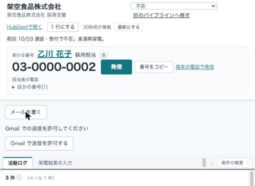
送る
- メールを書く を押す。
- 「宛先」を選ぶ（この取引の担当者のうち、メールアドレスのある人だけが出る）。必要なら「CC」も選ぶ。
- 「件名」「本文」を書いて 送信。通常 10 秒ほどかかる。
- 送れると活動ログの先頭に出る。
| 送信後の表示 | すること |
|---|---|
| 送信済み・保存済み | 何もしない。 |
| 送信済み・記録の保存待ち | メールは届いている。HubSpot への記録は自動で続く。送り直さない。 |
| 送信結果を確認中です。もう一度送らずにお待ちください。 | 待つ。送り直さない。 |
| 送信結果を確認できませんでした。Gmail の送信済みを確認してください。 | Gmail の送信済みを見て、送れていなければ送り直す。 |
| 送信済み・記録を保存できませんでした。管理者にご連絡ください。 | 管理者に伝える。 |
開封・クリックと返信
- 送ったメールのカードに「開封 N 回・クリック N 回」（開封が無ければ「未開封」）が出る。「開封・クリックの詳細」で最初と最後の開封の時刻、リンクごとのクリック数を見られる。
- 開封は画像の読み込みで数えるため、実際の開封と違うことがある。送った本人が Gmail の送信済みを開いても数えることがある。
- 相手からの返信は自動で取り込まれ、「受信」として活動ログに並ぶ。活動ログの上に「返信の確認 N 分前」が出る。
右の枠（求人検索など）RIGHT PANEL
- 求人検索: 「検索:」で 電話番号 か 会社名 を選ぶ。番号または会社名に「求人」を付けて Google で検索した結果が出る。
- ホームページ: 取引か会社に登録されたホームページ。
- 求人票: 取引に登録された求人票の URL。
- プロパティの値のリンクを押すと、右の枠に新しいタブで開く（最大 5 つ）。Ctrl（⌘）を押しながらクリックするとブラウザの新しいタブで開く。
- 枠に表示できないサイトは「このページは画面の中に表示できません」と出る。新しいタブで開く を使う。
- 広げる で画面いっぱいに広げる。戻す か Esc で戻る。
今日の成績TODAY
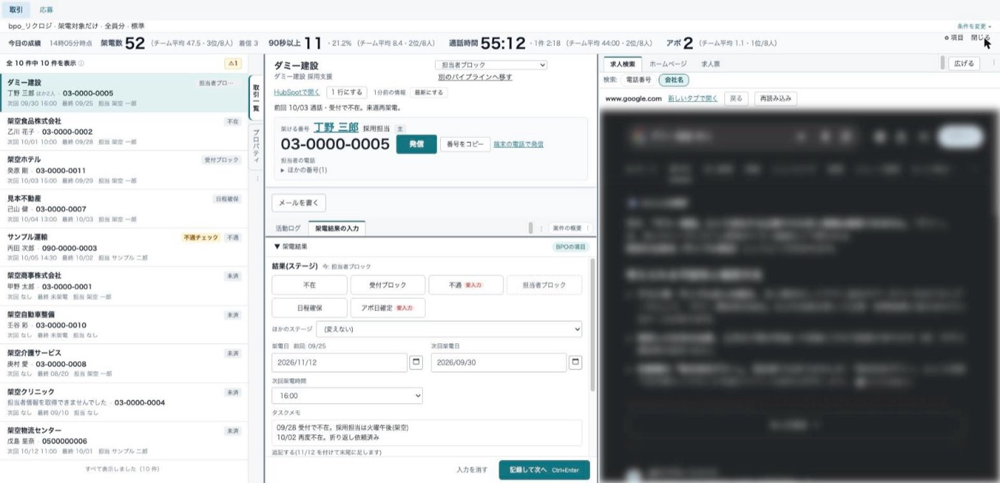
| 項目 | 数え方 |
|---|---|
| 架電数 | 今日、Zoom で発信した件数。着信は数えない（横に「着信 N」）。 |
| 90秒以上 | 通話が 90 秒以上だった発信の件数と、架電数に対する割合。30・60・360 秒も選べる。 |
| 通話時間 | 今日の通話時間の合計と、1 件あたりの平均。 |
| アポ | 今日「アポ日確定」に入った取引の数。アポ獲得者（空なら取引担当者）に数える。 |
- 比べる相手は、同じ HubSpot チームで今日架電した人。今日の架電が 0 件のときは順位は出ない。
- 2 分ごとに自動で更新される。「○時○分時点」が集計の時刻。
- ⚙ 項目 で帯に出す項目と順番を選ぶ。＋ 自分の項目を足す で、条件に合う取引の件数などを自分用に足せる（最大 6 個）。
- 新規営業チームの人には、今月の成績の帯が出る。
配置を変えるLAYOUT
- パネル（取引一覧・プロパティ・案件の概要・活動ログ・架電結果の入力・求人検索・リンク先）は、タブをドラッグして別の列へ移せる。タブの「⋮」から「左へ移動」「中央へ移動」「右へ移動」も選べる。
- 列の境目をドラッグすると幅が変わる。
- 配置はこのブラウザに保存される。条件の操作欄の「…」→ 元の配置に戻す で最初の配置に戻る。
応募の画面APPLICANTS
画面上部の 応募 で切り替える。配置は取引と同じ 3 列。
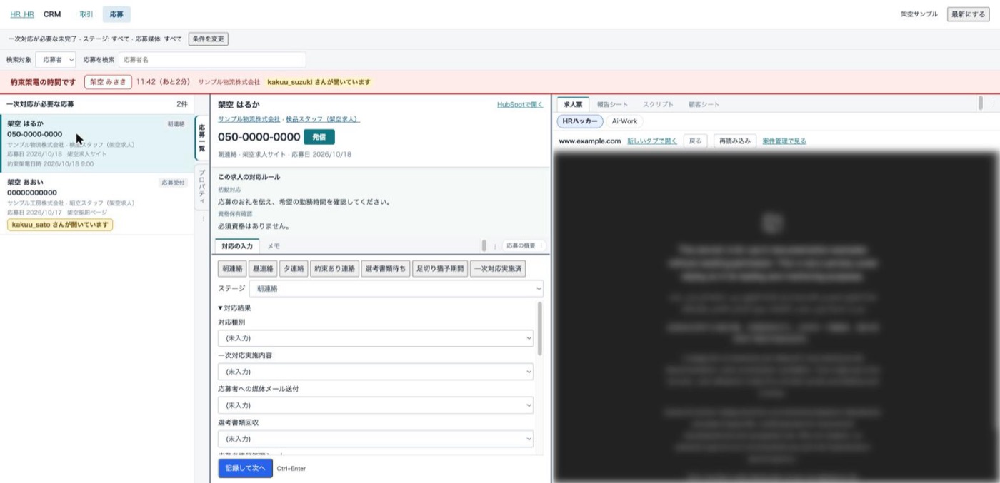
- 一覧の既定は「一次対応が必要な未完了」。条件を変更 で「すべての応募」、ステージ、応募媒体を選べる。
- 「検索対象」（応募者・取引・求人）を選んで「応募を検索」に入れる。
- 行には氏名・ステージ・電話番号・取引名・求人名・応募日・応募媒体・約束架電日時が出る。続きは 続きを読み込む。
- 中央の上に「この求人の対応ルール」（初動対応・資格保有確認など）が出る。電話の前に読む。
- 右の枠は「求人票」「報告シート」「スクリプト」「顧客シート」。
- ヘッダーの Zoom で Zoom の枠を開く。最新にする で一覧と詳細を読み直す。
- 左の縦タブ「プロパティ」に応募者の情報・応募先・応募の内容・ヒアリングが出る。
対応の入力INPUT
- ステージ: ボタン（朝連絡・昼連絡・夕連絡・約束あり連絡・選考書類待ち・足切り猶予期間・一次対応実施済）か「ステージ」で選ぶ。
- 対応結果: 対応種別、一次対応実施内容などを選ぶ。約束架電日時は日付と時刻で入れる。
- 連絡確認目的詳細: 書くと今の内容の末尾に「月/日」を付けて足される。
- 記録して次へ（Ctrl+Enter）: 保存して次の応募へ進む。
- 保存の状態の表示は取引と同じ（保存の状態と競合）。
- 取引と違い、HubSpot 側で先に変更されていたときは上書きを選べない。「HubSpot 側で先に変更されています。保存せず、最新の内容を確認してください。」が出たら 最新の内容を読み直す を押し、入れ直す。
- 「この応募のパイプラインは読み取り専用です。」と出る応募は、見るだけになる。
約束架電の帯と「開いています」REMINDER
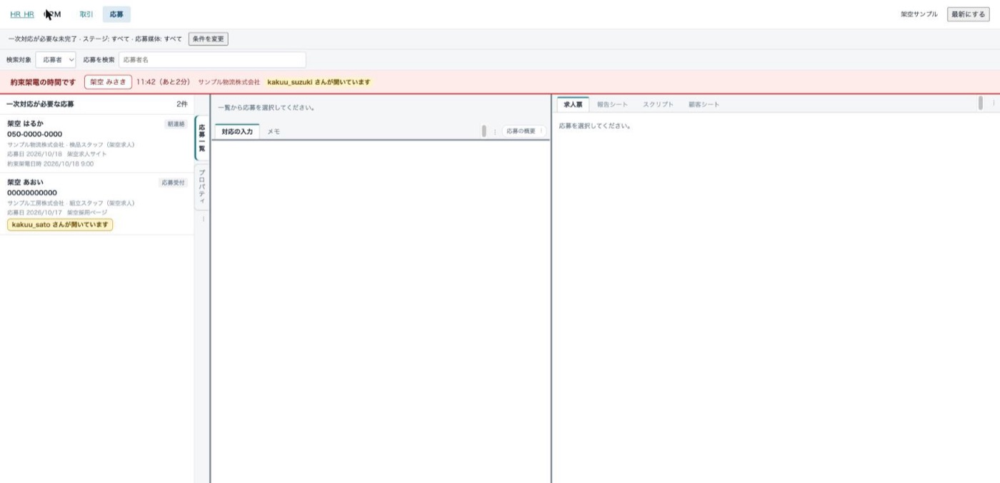
- ステージが「約束あり連絡」の応募は、約束架電日時の 5 分前から上に赤い帯で出る（「14:05（あと3分）」、過ぎると「（N分過ぎ）」）。氏名を押すとその応募が開く。
- 帯はステージを「約束あり連絡」から移すまで出続ける。応募画面を開いている全員に出る。
- 「○○ さんが開いています」は、ほかの人が同じ応募を開いていることを示す。「同じ電話番号の応募を開いています」は、番号が同じ別の応募を開いていること。
- 発信は止まらない。印を見たら、かける前に声をかけて二重にかけないようにする。
キーボード操作KEYS
| 場所 | キー | 動き |
|---|---|---|
| 取引一覧 | ↑ ↓ | 選ぶ取引を移す |
| 取引一覧 | Enter | 架電結果の入力を開き、結果のボタンへ移る |
| 架電結果・対応の入力 | Ctrl/⌘+Enter | 記録して次へ |
| プロパティの編集 | Enter ／ Esc | 保存 ／ やめる（複数行の欄は Ctrl+Enter で保存） |
| 条件の帯・広げた枠・Zoom の枠・メール作成 | Esc | 閉じる・戻す |
| 列の境目 | ← → | 幅を変える |
困ったときTROUBLE
| 表示 | すること |
|---|---|
| HubSpot が混み合っています。少し待ってから再試行してください。 | 数十秒待って 再試行。 |
| HubSpot の呼び出し回数の上限に達しました。／HubSpot からの応答が時間内に返りませんでした。 | 少し待って 再試行。 |
| 取得に時間がかかりすぎたため中断しました。条件を絞って再試行してください。 | 条件を絞る。 |
| 続きの読み込みに使う情報が古くなりました。最初から読み直してください。 | 最初から読み直す。 |
| 短時間に保存が多すぎます。少し待ってから保存してください。何も保存されていません。 | 少し待って保存し直す。 |
| いま保存を受け付けられません。何も保存されていません。 | 少し待って保存し直す。 |
| ログインが切れています。再読み込みしてログインしてください。 | 画面を再読み込みしてログインする。入力途中の架電結果は残る。 |
| あなたのメールアドレスに対応する HubSpot の所有者が見つかりません。 | 担当の欄で自分を一覧から選ぶ。続くときは管理者に伝える。 |
| 画面を読み込めませんでした。通信の状態を確かめて、再読み込みしてください。 | 再読み込み。 |
| HubSpot で変えた値が画面に出ない | 案件の概要の 最新にする。画面は同じ取引の内容を最大 60 秒使い回している。 |
| 「管理者に連絡してください」と出るもの（接続設定・権限・反映できなかった など） | 表示の文言と取引名を管理者に伝える。 |
管理者だけの機能ADMIN
- 画面上部の「HubSpot に保存できなかった操作が N 件あります」: 管理者にだけ出る。押すと管理画面の一覧（再試行・破棄）が開く。
- プロパティの「この並びを ○○ の標準にする」: 役割（管理者・営業・コンサルタント・BPO・一般）ごとに、プロパティの標準の並びを決める。
- 全員の今日の成績: 管理画面
/app/admin?view=callers。 - 担当の既定は、管理者は「全員分」、それ以外の人は「自分」。